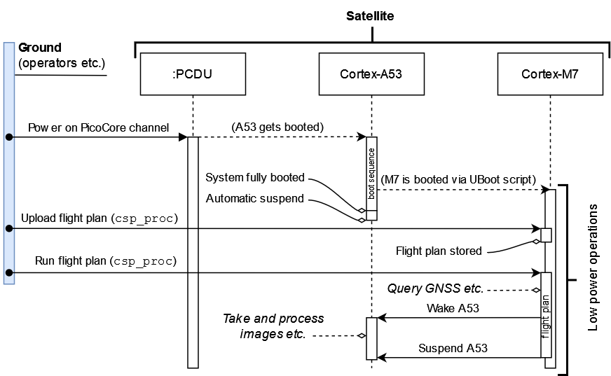

Application/System manager (Linux system calls over CSP)
An application has been developed to expose the Linux-side of the PicoCoreMX8MP over CSP as app-sys-manager (node 21 as of writing), providing a remote interface to run system calls on the Linux system. The application is registered as a systemd service, so it starts automatically when the system boots up.
The app-sys-manager can be used for various tasks such as:
Suspending linux (A53 cores into WFI) - this also brings this node down, so it must be woken up from the Cortex-M7 via its
wake_a53parameterset
suspend_a53to any value to suspend the A53 coresset
suspend_on_bootto any value greater than or equal to 1 to suspend the A53 cores on boot (This is a persistent setting)
Installing Vimba drivers
set
vimba_installto any value to install Vimba drivers
Start/stop camera control process
set
mng_camera_control nstart the camera control application as node numbern(n=0 kills any running camera control process)
Start/stop image processing (DIPP) process
set
mng_dipp nstart the DIPP application as node numbern(n=0 kills any running DIPP process)
Switching the Cortex-M7 binary between the main (
/home/root/disco_scheduler.bin) and stage files (/home/root/_stage_disco_scheduler.bin)set
switch_m7_binto any value to switch the Cortex-M7 binaries - NOTE: Switching the Cortex-M7 binary is disabled for now, as it only makes sense if file upload to the Linux filesystem gets implemented.
Rebooting PicoCoreMX8MP
run
rebootcommand (affects Cortex-M7 application as well). This uses the default CSP reboot hook.
 Conceptual overview of the primary operation sequence
Payload Nodes in the CSP network
When the system is fully up and running, the PicoCoreMX8MP will contain the following nodes in the CSP network: